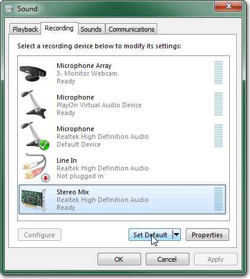
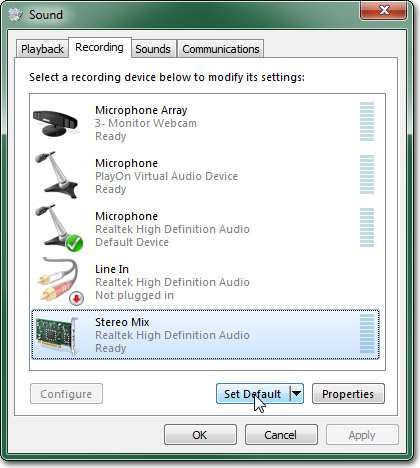

UDN
Search public documentation:
CapturingCinematicsAndGameplay
日本語訳
中国翻译
한국어
Interested in the Unreal Engine?
Visit the Unreal Technology site.
Looking for jobs and company info?
Check out the Epic games site.
Questions about support via UDN?
Contact the UDN Staff
中国翻译
한국어
Interested in the Unreal Engine?
Visit the Unreal Technology site.
Looking for jobs and company info?
Check out the Epic games site.
Questions about support via UDN?
Contact the UDN Staff
UE3 Home > Matinee & Cinematics > Capturing Cinematics and Gameplay
UE3 Home > Cinematic Artist > Capturing Cinematics and Gameplay
UE3 Home > Cinematic Artist > Capturing Cinematics and Gameplay
Capturing Cinematics and Gameplay
Overview
Rendering Frames
Capturing Frames
Capturing individual frames in Unreal is simply a matter of using the right combination of command line arguments when running the game. The engine has the ability to force the game to run at a specified framerate and output each rendered frame as an uncompressed .BMP image. Combine this ability with commands to set the resolution and specify a particular map to run on start-up and you have the ability to render out footage from your game at extremely high resolutions while running perfectly smoothly. In order to force the game to run a particular map, you need to pass the map's name to the executable. You will also want to make sure that the sequence of events you want to capture are set to run automatically when the level begins if you are capturing a cinematic sequence or you are planning to capture at a resolution higher than what your system can keep up with while rendering at the desired framerate. For instance, if you have a map named UDN_FeaturesDemo.udk containing a cinematic sequence you want to capture, you would use the following command line to run it:UDK.exe UDN_FeaturesDemoThe Command Line Arguments that are used in this process are:
- ResX= - Set horizontal resolution for game window.
- ResY= - Set vertical resolution for game window.
- BENCHMARK - Run game at fixed-step in order to process each frame without skipping any frames. This is useful in conjunction with DUMPMOVIE options.
- DUMPMOVIE - Dump rendered frames to files using current resolution of game.
- DUMPMOVIE_TILEDSHOT=X - Similar to "DUMPMOVIE", but captures each frame as a tiled shot for very high resolution frames (files will be very large, try starting with 2)
- NOTEXTURESTREAMING - Disable texture streaming. Highest quality textures are always loaded.
- MAXQUALITYMODE - Forcibly overrides certain system settings to their highest quality regardless of performance impact.
UDK.exe UDN_FeaturesDemo -BENCHMARK -MAXQUALITYMODE -NOTEXTURESTREAMING -DUMPMOVIE -FPS=30 -ResX=1280 -ResY=720You may notice when running the game like this that you get a few unwanted frames at the beginning and ending of the sequence. This is nothing to worry about since they are individual image files. You can simply delete any unwanted files when the rendering is finished. The resulting image files will be located in the Screenshots directory of your game's installation folder, by default. For UDK users, this would be something like:
C:\UDK\UDK-2010-08\UDKGame\ScreenShotsThe output path can be set in the [Core.System] section of the the *Engine.ini. For example, for UDK the UDKEngine.ini has:
ScreenShotPath=..\..\UDKGame\ScreenShotsThat is actually built from the BaseEngine.ini which has the generic version. If you wanted to make a permanent change to the output directory for frames and screenshots, the BaseEngine.ini would be the file to change. For temporary changes, the [YourGame]Engine.ini can be modified. The files will be named MovieFrame*.bmp, where * is a five digit number representing the frame number of that image. Since the files will always be named the same, you should move these images to a new directory as soon as the capture is complete so there is no risk of getting them confused or overwritten. WARNING: This method will require a great deal of free disk space as it deals with uncompressed files. Depending on the length of the sequence to be captured, you could be looking at 10's of GB of image files and video files.
Capturing Sound
In order to capture the audio, you will need to use one of the realtime methods of capturing, software or hardware. Then you can simply re-play the cinematic a second time to capture the audio. The concerns of the game being able to keep up will not be an issue since you can run the game at a very small resolution this time through as you are only interested in the audio. For out example, we could use the following command line:UDK.exe UDN_FeaturesDemo -ResX=320 -ResY=180There are applications, Audacity being one, which can simply capture only the audio from your computer which would be ideal in this situation. However, you can also use a regular screen capture program to record a video file with audio and rip the audio from the resulting video file afterward if need be. We will use Audacity as an example here. First, make sure you have Audacity installed. It can be downloaded here. Once Audacity is installed, run the program. Open the Preferences dialog from the Edit menu and select the Audio I/O tab. Set the Recording Device to point to your speakers, Stereo Mix (Realtek high Definition) in the example, and set the number of Channels to 2 (Stereo). This tells Audacity to record from the sound card in stereo. Then press OK to save the changes. Now just press the
 button to begin capturing the sound card's audio. A 2-channel audio track in the workspace of Audacity should appear and begin scrolling as it captures the audio.
Use the command line from above to begin playing the low-resolution scene to be captured.
button to begin capturing the sound card's audio. A 2-channel audio track in the workspace of Audacity should appear and begin scrolling as it captures the audio.
Use the command line from above to begin playing the low-resolution scene to be captured.
 Press the button after the scene has finished playing to end the audio capture. You should end up with the full captured audio track in the workspace of Audacity.
Now, select Export As WAV from the File menu, select a location and filename, and press Save to save the captured audio to a file.
Press the button after the scene has finished playing to end the audio capture. You should end up with the full captured audio track in the workspace of Audacity.
Now, select Export As WAV from the File menu, select a location and filename, and press Save to save the captured audio to a file.
Editing Sound
Since the audio had to be captured separately, the resulting audio file is not likely to be in sync with the video that was captured. Also, you will most likely have some unwanted audio at the beginning and/or ending of the audio capture that will need to be removed. Editing the audio file is a fairly straightforward process using an editing program, such as Audacity. There are many audio editing programs available that will do the job. Since we have already used Audacity to capture the audio and it happens to be free, we will focus on it. The basic idea here is to find the point in the audio capture file where the actual sound of our video begins. Then we can extrapolate how long the audio should be from the number of frames of video that were captured. In our example 2457 frames were captured, meaning at 30 frames per second we have 1 minute 21.9 seconds of video. So, we need to have 1 minute 21.9 seconds of audio. You can select a section of audio in Audacity by left-clicking and dragging the mouse on the waveform. Once you have found the starting point of your audio, left-click and begin dragging to the right. You will notice in the status Bar at the bottom it tells you the selection range as well as the total length of the selection. You can use that to tell when you have selected the full audio clip. With the audio selected, press Ctrl + C to copy the selection. Then click down below the existing track in the workspace and press Ctrl + V to paste the selection into a new track. You can now, delete the original track by clicking the button for that track. Now, select Export As WAV from the File menu, select a location and filename, and press Save to save the trimmed audio to a file. Use a different name for this file so that you still have the original full capture around if you need to go back and do the process again.Compositing Frames and Sound
In order to composite the image frames into a single video file, and also to merge the audio capture with the video, a compositing or video editing program will be needed. There are lots of video editing suites out there; most of which are fairly expensive. A nice non-linear editing application would be ideal for putting together the video as it will allow you to position the audio and video separately on a timeline and drag them around to match them up. However, a simple and free alternative is to use VirtualDub. This is a powerful compositing application that will do exactly what we need it to do, composite our image sequence and audio into a single video file, and can even be used to encode the video using a variety of codecs later on if you so choose. First, make sure your have VirtualDub installed. You can download it from here. Once it is installed, run the application. From the File menu, choose Open Video File. In the file dialog that appears, locate and select the first image in the sequence of rendered frames, for this example it is MoveiFrame00003.bmp. Click Open and the entire sequence should be loaded into VirtualDub. You can scrub through the timeline to confirm this is the case. Now, in the Audio menu, select Audio from another file. Find and select the trimmed audio capture file and click Open to load it.
You can play back the video in VirtualDub and see that your audio is lining up well with the video at this point. If it isn't you may need to do further editing in Audacity to get it just right.
The Audio should already be set to Direct Stream Copy. This means that no compression or anything will be performed. It simply copies the audio from the file into the new saved video file. However, the video will need to use Full processing mode, which it will default to. The compression also defaults to creating an uncompressed video file which is exactly what we want so these settings are all perfect.
When you are ready to save the video file, choose Save as AVI from the File menu. Choose a destination and name for the file and click Save. The status window will appear to show you the progress of the conversion.
When the process is complete, you can located and play the video file, assuming your PC can handle it since it is uncompressed at this point. You can skip to the Encoding section now if you wish to compress the video to a more manageable size.
Now, in the Audio menu, select Audio from another file. Find and select the trimmed audio capture file and click Open to load it.
You can play back the video in VirtualDub and see that your audio is lining up well with the video at this point. If it isn't you may need to do further editing in Audacity to get it just right.
The Audio should already be set to Direct Stream Copy. This means that no compression or anything will be performed. It simply copies the audio from the file into the new saved video file. However, the video will need to use Full processing mode, which it will default to. The compression also defaults to creating an uncompressed video file which is exactly what we want so these settings are all perfect.
When you are ready to save the video file, choose Save as AVI from the File menu. Choose a destination and name for the file and click Save. The status window will appear to show you the progress of the conversion.
When the process is complete, you can located and play the video file, assuming your PC can handle it since it is uncompressed at this point. You can skip to the Encoding section now if you wish to compress the video to a more manageable size.
Realtime Capturing
Software Capturing
Screen capturing software can be a cost-effective method of capturing footage. There are several free programs out there that will allow you to capture the audio and video of your game directly to a video file. Some even have added features for encoding to particular formats while capturing, converting to other formats after capturing, and even directly uploading to Youtube or other video sites from within the software. One major drawback of screen capturing software is that the software takes processing power to do what it does. Unless you are running the game and software on a monster system, the odds that you can capture a high-resolutions without dropping frames is very slim. This may be acceptable for internal videos, but for promotional purposes where the video will be shown to the public or the media, it is unlikely that you will want a video with any noticeable hitching, jumps in animations, etc. Camtasia is a professional screen capturing software that has tons of features. It can do pretty much anything you might want to do as far as capturing footage is concerned. It does come with a fairly hefty price tag, though, so that is something to keep in mind. A free alternative to Camtasia is CamStudio. It is an open source project that is very similar to Camtasia's recorder using an almost identical interface. This is a good alternative when developing a game on a tight budget. As such, this is the software we will focus on when going through the process of capturing footage with screen capturing software. Make sure you have CamStudio installed. You can download it here. Once installed, open CamStudio. In the Region menu, choose Region. This will allow us to specify a region for capturing when we are ready to record. Select Video Options from the Options menu to open the Video Options dialog. The Compressor you choose is up to you. We will leave it on Microsoft Video 1 and turn the Quality all the way up to 100. Under Framerates, set Capture Frames Every to 33 milliseconds and set Playback Rate to 30 frames/second. This should give you a 30 frames per second capture instead of the 200 fps that it defaults to. You may be able to get the Record audio from speakers option to work on your system; however, it seems to have issues with Windows 7 machines so we will use an alternative method to set up the speakers to be used as the microphone instead. Open the Recording devices for sound in Windows. Find your sound device, "Stereo Mix (Realtek High Definition Audio)_ in the example, and select it. If you do not see your sound device listed, right click and make sure Show Disable Devices and Show Disconnected Devices are both enabled. Set the selected sound device as the default.

Press the to open the properties dialog for the sound device. Select the listen tab and set Playback through this device to point to your speakers.
Click OK and close the dialogs. Back in CamStudio, select Audio Options for Microphone from the Options > Audio Options menu.
Set the Audio Capture Device to point to your sound device.
Then set the Recording Format to 44.1 kHz, stereo, 16-bit.
Make sure Record audio from microphone is selected in the Options menu.
CamStudio is now set up and ready to capture. Start up Unreal with the map you want to capture from. Then press the button. Recording will not start until after you have selected a region to record. Click in the very top-left corner of the Unreal viewport and drag down to the bottom-right corner. You can see the size of the region you have selected while dragging.
Recording will begin immediately so once the selection is made, you should trigger the cinematic you want to record or begin the gameplay. When you are finished recording you can stop the recording by pressing the button. You will then be asked to choose a filename to save the video to.
The video will take a moment to process and then it will open up in the CamStudio player so you can review the capture.
If you are not happy with the result, you can perform another capture. Or if you need to edit parts out of the video, you can take the video into a video editing application and edit as necessary.
Set the selected sound device as the default.

Press the to open the properties dialog for the sound device. Select the listen tab and set Playback through this device to point to your speakers.
Click OK and close the dialogs. Back in CamStudio, select Audio Options for Microphone from the Options > Audio Options menu.
Set the Audio Capture Device to point to your sound device.
Then set the Recording Format to 44.1 kHz, stereo, 16-bit.
Make sure Record audio from microphone is selected in the Options menu.
CamStudio is now set up and ready to capture. Start up Unreal with the map you want to capture from. Then press the button. Recording will not start until after you have selected a region to record. Click in the very top-left corner of the Unreal viewport and drag down to the bottom-right corner. You can see the size of the region you have selected while dragging.
Recording will begin immediately so once the selection is made, you should trigger the cinematic you want to record or begin the gameplay. When you are finished recording you can stop the recording by pressing the button. You will then be asked to choose a filename to save the video to.
The video will take a moment to process and then it will open up in the CamStudio player so you can review the capture.
If you are not happy with the result, you can perform another capture. Or if you need to edit parts out of the video, you can take the video into a video editing application and edit as necessary.
Hardware Capturing
Hardware capturing refers to using a hardware capture card or system to capture the audio and video output. This has a clear advantage over software screen capturing in that it doesn't rely on software running on the same PC which has to grab and/or encode the video and audio as that will eat up resources. Hardware capturing is a great way to get high-quality audio and video captures of real gameplay controlled by a human. As with the other methods, there is always a drawback. The drawbacks here are two-fold. For one, You still need a system capable of playing your game at the resolution and framerate you desire. You may even want two systems so that all the capturing can happen on a completely separate machine. The second drawback is price. Professional capture cards and systems can be very expensive. That said, you usually get what you pay for in this area. There are many hardware solutions available. Currently, Epic uses an Aja IO board for capturing straight HDMI, which avoids the need for additional video processing.Encoding
| Format | Video | Audio |
|---|---|---|
| SD (640x480) | 2000 kbps | 320 kbps / 44.100 kHz |
| SD (863x480) | 3000 kbps | 320 kbps / 44.100 kHz |
| HD (1280x720) | 5000 kbps | 320 kbps / 44.100 kHz |
- Target Size - Handbrake will attempt to encode the video so that the result will be near that number of MB. The lower the value, the worse the video quality will be.
- Avg Bitrate - Handbrake will encode the video using the bitrate entered. The higher the value, the better the quality and the larger the filesize. This will result on a constant bitrate in the encoded video.
- Constant Quality - Handbrake will adjust the bitrate to ensure the desired quality level chosen. The higher the quality, the larger the file in general. This will result in a variable bitratein teh encoded video.